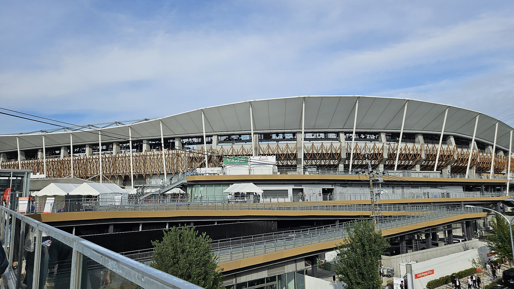

Узбекистан завершил Азиатские игры 2026 в Аити-Нагое на пятом месте с 70 медалями
Узбекистан завоевал 21 золотую, 25 серебряных и 24 бронзовые медали, заняв пятое место в общем зачёте. Пять стран Центральной Азии вместе собрали 186 медалей.

В японских городах Аити и Нагоя с 19 сентября по 4 октября 2026 года прошли XX летние Азиатские игры. Сборная Узбекистана завоевала 21 золотую, 25 серебряных и 24 бронзовые медали — всего 70 — и заняла пятое место в общекомандном зачёте, войдя в пятёрку сильнейших команд Азии.
Золотая борьба с Индией
По числу золотых наград Узбекистан сравнялся с Индией — у обеих стран по 21 золоту. Однако Индия заняла четвёртое место, а Узбекистан пятое из-за большего количества серебра у Индии. В общем зачёте первенствовал Китай, за ним — хозяйка Игр Япония и Южная Корея.
Центральная Азия — 186 медалей
Пять государств Центральной Азии вместе завоевали на Играх 186 медалей. Казахстан возглавил регион с 84 медалями (12 золотых), Узбекистан стал вторым с 70 (21 золото), Таджикистан взял 16, Кыргызстан — 14 (1 золото). Туркменистан завершил с двумя медалями, обе серебряные.
Узбекские чемпионы
Среди золотых медалистов Узбекистана — Владимир Свечников в стрельбе (мужской пневматический пистолет 10 м), Шохсанам Шерзодова в гребле на каноэ и Шахзод Нурматов с Собиром Сафаралиевым в академической гребле (лёгкий вес, двойка). Результат повторил пятое место Узбекистана на Играх 2023 года в Ханчжоу.